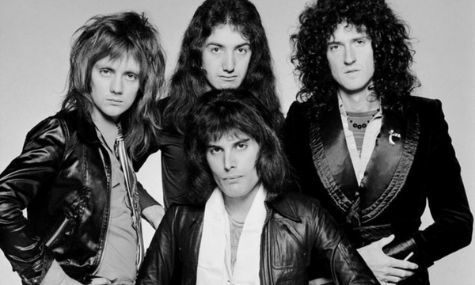

MENÚ
Queen
Banda británica de rock formada en 1970 en Londres.

Integrantes del grupo
- Brian May
- Freddie Mercury
- John Deacon
- Roger Taylor
Discografía
| Año | Disco |
|---|---|
| 1975 | A Night at the Opera |
| 1986 | A Kind of Magic |
| 1989 | The Miracle |
A Kind of Magicfue el álbum más exitoso. |
|
Historia del grupo
Queen es una banda británica de rock formada en 1970
en Londres por el cantante Freddie Mercury,
el Brian May, el baterista Roger Taylor y el
bajista John Deacon.
Si bien el grupo ha presentado bajas de dos de sus miembros
(Mercury,
fallecido en 1991, y Deacon, retirado en 1997),
los integrantes restantes, May y Taylor, continúan trabajando
bajo el nombre Queen, por lo que la banda aún se considera activa.
Sitio web oficial


ADRIÁN NAVARRO GABINO